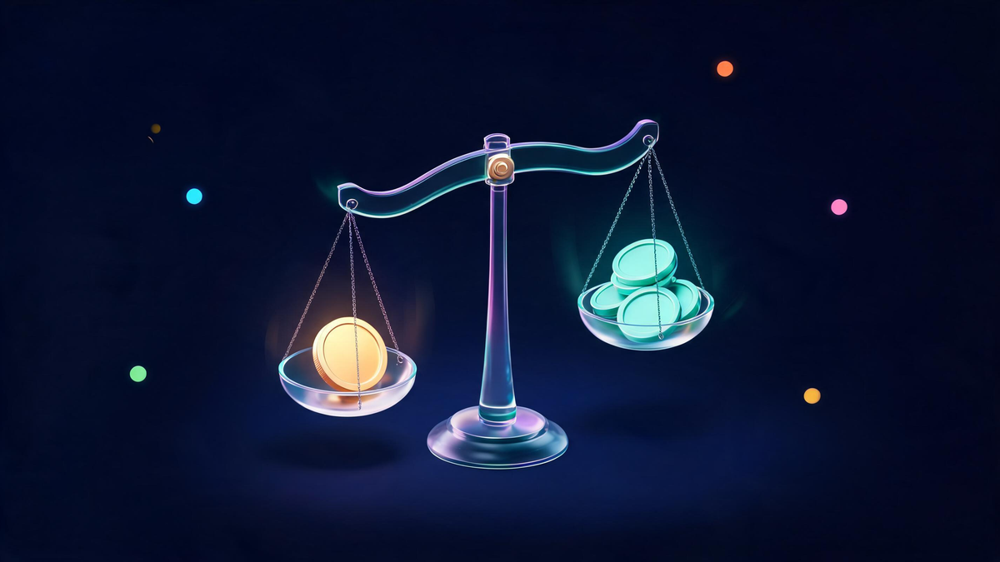
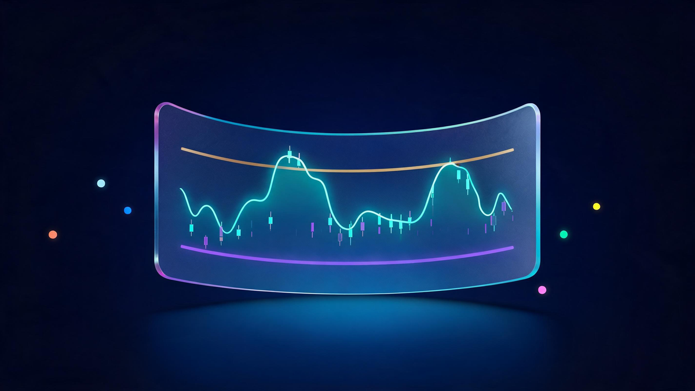
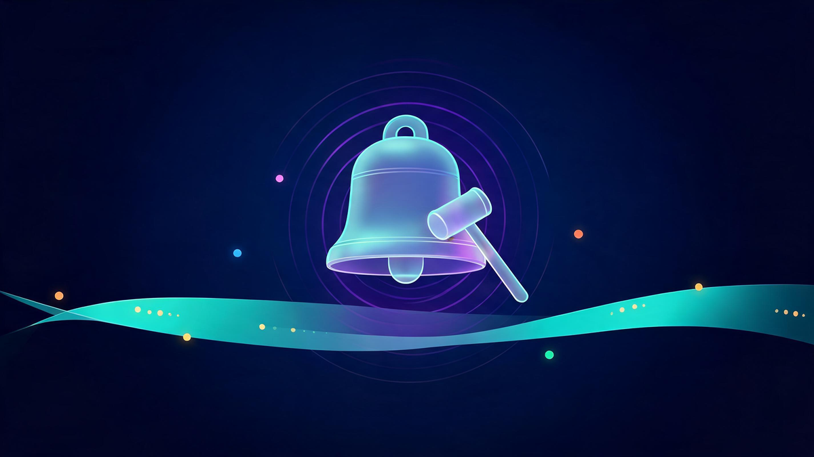

Dow Jones Industrial Average Today: Live Updates and Expert Analysis
The Dow Jones Industrial Average (DJIA), often simply called "the Dow," stands as one of the most recognized and closely watched stock market indexes in the world. For over a century, it has served as a vital barometer for the health of the U.S. economy and a key indicator of investor sentiment. Whether you are a seasoned investor, a professional trader, or simply someone interested in the financial landscape, understanding the movements of the Dow is crucial for informed decision-making.
This page is your comprehensive resource for tracking the dow jones industrial today. Here, you will find not only live, real-time data on the index's performance but also the historical context and expert analysis needed to understand what the numbers truly mean. We will delve into the composition of the DJIA, explore how its value is calculated, and examine the myriad factors that influence its daily fluctuations. From the opening bell to the final djia close today, this guide provides the clarity you need to navigate the complexities of the stock market with confidence.
What Is the Dow Jones Industrial Average (DJIA)?
The Dow Jones Industrial Average is a stock market index that represents the stock performance of 30 large, publicly-owned companies based in the United States. Created in 1896 by Charles Dow and Edward Jones, it is one of the oldest and most enduring indexes in financial history. The DJIA was designed to serve as a proxy for the broader U.S. economy, and despite its relatively small number of components, it remains an influential benchmark for market performance. The 30 companies included are often referred to as "blue-chip" stocks—a term that signifies well-established, financially sound corporations with a history of reliable performance.
Unlike other major indexes such as the S&P 500 or the Nasdaq Composite, which are market-capitalization-weighted, the DJIA is a price-weighted index. This means that stocks with higher share prices have a greater impact on the index's value, regardless of the company's overall size or market capitalization. For instance, a $1 change in a stock trading at $200 per share will move the Dow more than a $1 change in a stock trading at $50 per share. This unique methodology is a key differentiator from the S&P 500, which tracks approximately 500 of the largest U.S. companies based on their total market value.

The historical significance of the DJIA cannot be overstated. It has tracked the U.S. economy through periods of boom and bust, from the Roaring Twenties and the Great Depression to the dot-com bubble and the 2008 financial crisis. While some critics point to its limited scope of only 30 stocks as a shortcoming, its movements over time have largely mirrored those of broader, more inclusive indexes. For millions of people, the answer to "How did the market do today?" is synonymous with the daily performance of the Dow.
Track the Dow Jones Industrial Average Live Now
For investors and market watchers, accessing real-time data is essential for making timely and informed decisions. The value of the dow jones industrial average live ticker fluctuates constantly throughout the trading day, reflecting the collective price movements of its 30 component stocks. Whether you are executing a day trade or simply monitoring your long-term portfolio, understanding the current dow jones today provides an immediate snapshot of market sentiment.
Numerous financial news outlets and brokerage platforms provide a live Dow ticker, offering up-to-the-minute information on the index's performance. When you look for the dowjones now, you will typically see several key metrics that summarize its activity:
- Current price: 52,177.69
- Daily change (points): +556.21
- Daily change (percentage): +1.08%
- Time of last update: October 15, 2026, 4:00:00 PM GMT-4
The point change represents the total increase or decrease from the previous day's closing value, while the percentage change contextualizes that movement. A significant swing in either direction can signal a market reaction to economic news, corporate earnings reports, or geopolitical events. Tracking these live metrics helps investors gauge market volatility and react to emerging trends as they happen, rather than after the fact.
Understanding the DJIA's Components and Calculation
The 30 companies that constitute the Dow Jones Industrial Average are not chosen by a rigid set of rules but are selected by a committee of representatives from S&P Dow Jones Indices and The Wall Street Journal. The primary criterion is that a company must be a large, well-established "blue-chip" firm with a substantial presence in the U.S. economy. The components are reviewed periodically and can be changed to ensure the index accurately reflects the current economic landscape. For example, technology and healthcare companies have become more prominent in recent decades, replacing some of the heavy industrial firms that originally dominated the index.
Prominent companies currently in the DJIA include giants from diverse sectors such as technology (Apple, Microsoft), finance (Goldman Sachs, JPMorgan Chase), retail (Walmart, Home Depot), and healthcare (UnitedHealth Group, Johnson & Johnson). This diversity is intended to make the Dow a representative sample of the broader stock market.
The calculation of the DJIA is unique due to its price-weighted nature. To calculate the index's value, the sum of the share prices of all 30 component companies is divided by a special number known as the "Dow Divisor." This divisor is not simply 30. Instead, it is a constantly adjusted figure that ensures the index's value remains consistent and is not distorted by corporate actions like stock splits, spinoffs, or changes in the components. For example, if a company performs a 2-for-1 stock split, its share price is halved. Without the divisor, this would artificially crash the index. The divisor is adjusted downward to compensate, maintaining the historical continuity of the DJIA's value. This means every $1 change in the price of any component stock moves the index by an identical number of points.
Interpreting Dow Movements: What Today's Trends Mean
For a quick assessment of market performance, many turn to the dow chart today. This visual representation provides a wealth of information about the day's trading activity. A typical daily chart will display the Dow's opening value, its highest point (high), its lowest point (low), and its closing value. These four points are fundamental for understanding the market's trajectory and volatility throughout the trading session. An upward trend, where the index consistently posts higher highs and higher lows, generally signifies positive or "bullish" market sentiment. Conversely, a downward trend indicates negative or "bearish" sentiment.

When analyzing the dow jones today chart, it's important to distinguish between short-term volatility and longer-term trends. Intraday swings can be caused by a variety of factors, including automated trading algorithms reacting to news headlines or a single influential stock experiencing a sudden price change. These movements can create "noise" that may not reflect the market's underlying direction. To gain a clearer picture, analysts often look for patterns over several days, weeks, or even months.
More advanced traders use the todays dow jones chart to identify potential support and resistance levels. A support level is a price point where the index tends to stop falling and bounce back up, suggesting a concentration of buyers. A resistance level is a price point where the index often stops rising and turns back down, indicating a concentration of sellers. Identifying these levels can help in making strategic entry and exit decisions.
However, it is crucial to remember that the DJIA is an indicator, not a crystal ball. Its movements reflect the current state of the market but do not predict the future with certainty. For a well-rounded analysis, the Dow's performance should always be considered alongside other critical information, such as economic reports, corporate earnings, and global events.
Dow Jones Industrial Average Close Today: Historical Context and Daily Summary
When the closing bell rings on the New York Stock Exchange, the final value of the index becomes the djia close today. This figure is one of the most widely reported financial metrics in the world, serving as the definitive summary of the market's performance for that day. The closing dow jones average today provides a crucial data point that allows investors to measure performance, analyze trends, and make comparisons over time. The previous closing value for the Dow was 51,621.48.

The significance of the dow close today extends far beyond a single day's results. It becomes a permanent part of the index's historical record, contributing to the long-term data that analysts use to identify market cycles, evaluate investment strategies, and forecast potential economic shifts. By comparing today's closing value to those of previous days, weeks, and months, investors can spot emerging trends. A series of higher closes might indicate a strengthening bull market, while a pattern of lower closes could signal the onset of a bearish trend.
Historical closing data for the Dow Jones Industrial Average is readily available through various financial news websites, stock market data providers, and academic resources. This wealth of information allows for in-depth analysis of how the market has reacted to different economic conditions and historical events. Analysts use this data to calculate key performance metrics like daily, weekly, and monthly returns, which are essential for assessing the performance of portfolios and investment funds benchmarked against the DJIA.
Factors Influencing the Dow Jones Industrial Average
The performance of the dow stock market today is not driven by a single force but by a complex interplay of economic, corporate, and geopolitical factors. Understanding these drivers is key to interpreting the index's movements. Major economic indicators have a profound impact on market sentiment. Reports on inflation, such as the Consumer Price Index (CPI), and decisions on interest rates by the Federal Reserve are closely watched. Higher inflation and rising interest rates typically create headwinds for the stock market, as they increase borrowing costs for companies and can dampen consumer spending.
Employment data, including the monthly non-farm payrolls report and the unemployment rate, also plays a critical role. Strong employment figures often signal a robust economy, which can boost investor confidence and drive stock prices higher. Similarly, reports on Gross Domestic Product (GDP) growth and consumer spending provide insight into the overall health of the economy, directly influencing the outlook for the large corporations that make up the DJIA.
Corporate earnings are another primary driver. Since the Dow is composed of 30 influential companies, their quarterly financial results can significantly move the index. Stronger-than-expected profits or optimistic future guidance from a major component like Apple or Microsoft can lift the entire average, while a disappointing report can drag it down. Beyond domestic factors, global events frequently send ripples through the U.S. market. Geopolitical conflicts, international trade agreements, and economic instability in other major economies can all affect investor sentiment and, consequently, the Dow's performance. Ultimately, the index's daily fluctuations are a reflection of the collective psychology of investors as they process this constant stream of information.
Stay Informed: Get Real-Time Market Insights and Analysis
Navigating the stock market requires continuous learning and access to timely information. To stay ahead of market trends and understand the forces shaping the Dow Jones Industrial Average, consider signing up for a market newsletter. These resources can deliver daily summaries, breaking news, and expert analysis directly to your inbox, helping you make sense of the day's volatility and identify potential opportunities.
For those looking to deepen their financial knowledge, a wealth of educational resources on stock market investing, technical analysis, and financial planning is available. Exploring these guides can empower you to build a more resilient and effective investment strategy. However, the information provided here is for informational purposes only and should not be considered financial advice.
Every investor's situation is unique, and a personalized strategy is often the key to success. Consulting with a qualified financial advisor can provide you with tailored guidance based on your specific goals, risk tolerance, and financial circumstances. An expert can help you create a diversified portfolio and navigate the complexities of the market with greater confidence.
- Learn More: Explore our comprehensive guides on market analysis and long-term investing strategies.
- Sign Up: Get daily DJIA updates and expert market commentary delivered directly to your inbox.
- Contact Us: Speak with a financial expert today to discuss your investment goals and build a personalized plan.